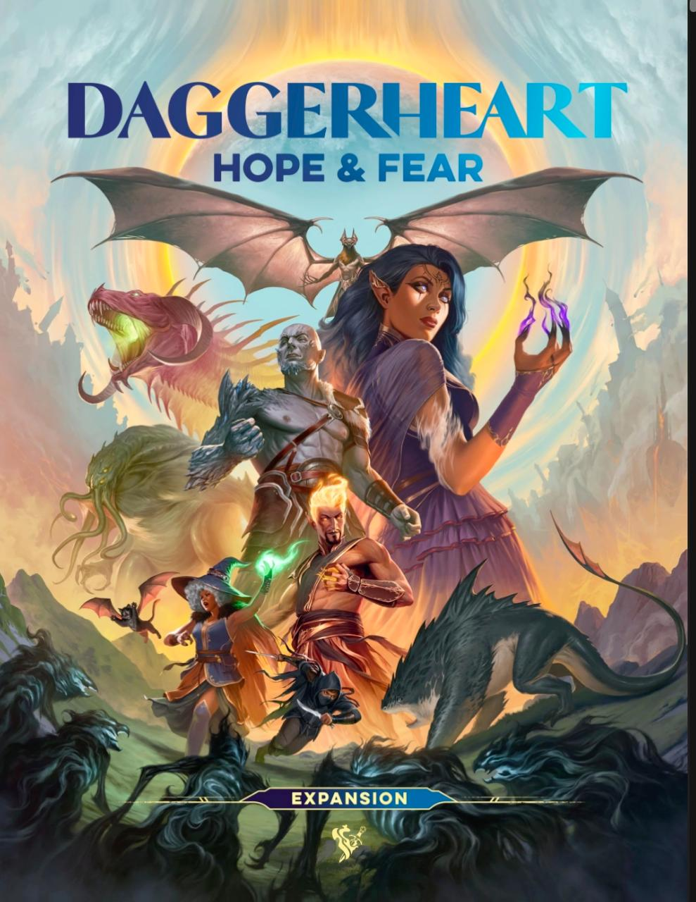
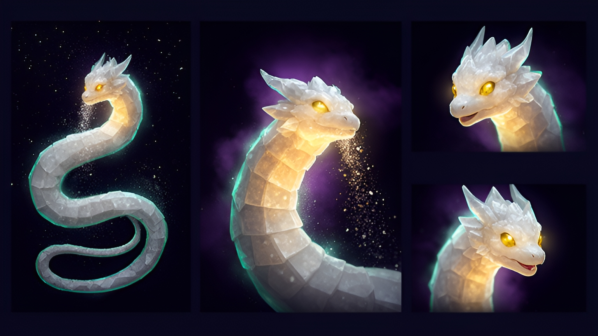

Daggerheart Core Rulebook
Everything: characters, play, GM tools, adversaries, campaign frames
Open
Daggerheart: Hope & Fear
The expansion
OpenAlt covers (ours)


Sample shelf: future titles
- Daggerheart Core Rulebook397 pages · 5 chapters
- Daggerheart: Hope & Fear204 pages · Expansion
- Table Quick Reference12 pages · 3 sections

Table Quick Reference - House RulesHouse Rules8 pages · 1 chapter
- Session Zero PackSession Zero Pack16 pages · 4 sections
- Adversary DeckAdversary Deck: The Long Title That Wraps Onto Two Lines64 pages · 2 chapters